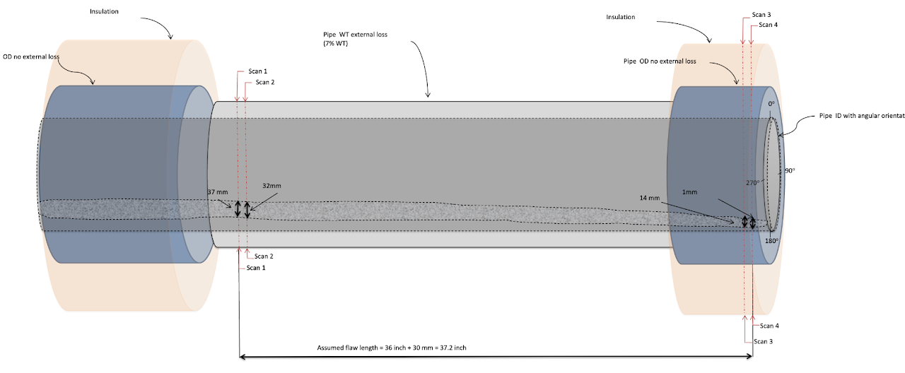

01
Pipeline integrity & corrosion
Corrosion work here is written to an integrity decision: remain in service, repair, or replace. Internal and external mechanisms are modeled together with coatings, CP, and remaining-wall FFS so the argument is one document, not three memos.
- Comprehensive corrosion analysis: internal CO2, H2S, and microbiologically influenced corrosion (MIC)
- External cathodic protection; oxygen, seawater, and galvanic modeling
- Erosion-corrosion and sand erosion
- Fitness-for-service of general, localized, and pitting corrosion
- Coating evaluation and CP remediation
- Integrity management, corrosion management plans, and risk-based assessment (RBA) for onshore and offshore systems
- Failure analysis of pipeline systems
- Inspection related to pipe making and coatings
